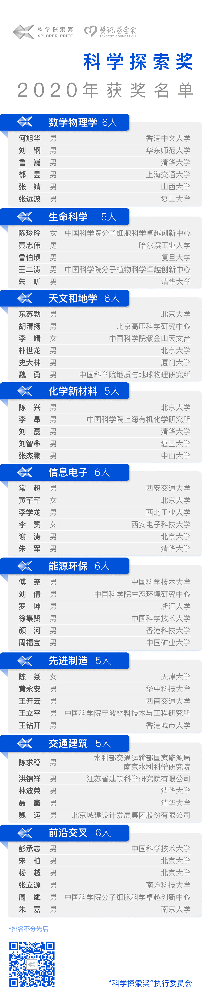

后起之秀
>
2020年“科学探索奖”获奖名单公布 最年轻获奖人仅30岁
2020年“科学探索奖”获奖名单公布 最年轻获奖人仅30岁
2020-9-25 14:21 央视网
9月25日，第二届“科学探索奖”获奖名单正式揭晓，50位青年科学家每人将在未来5年内获得腾讯基金会总计300万元人民币奖金，并且可以自由支配奖金的使用。
据“科学探索奖”管理委员会透露，本次获奖人名单较去年更为多元化，其中女性获奖人增至5位、35岁及以下获奖人6位（最年轻获奖者仅30岁），港澳地区首次放开申请后，亦有3位科学家获奖。
2020年“科学探索奖”颁奖典礼将于11月14日在北京举行。届时，50位获奖人将公开亮相，众多国内外科学家代表也将应邀出席，共同见证这一荣誉时刻。
“科学探索奖”希望通过激励青年科技工作者，助力我国原始创新能力的提升。腾讯董事会主席兼首席执行官、腾讯基金会发起人马化腾表示：“我们非常期待‘科学探索奖’可以长期支持一大批优秀的青年科学家潜心探索、献身科研，希望将来在他们当中诞生科学大家，为国家的科技事业做出突破性的贡献。”
鼓励投身基础研究和自由探索
2020年“科学探索奖”获奖人体现出极高的“含金量”。50名获奖人中的48人拥有教授或同级职称，38人有海外一流高校、研究机构学习或工作的经历。“科学探索奖”的评审“英雄不问出处”，50名获奖人中既有国家级奖项的获得者，也有多人此前没有获得过其他知名奖项。
“科学探索奖”特别关注女性科学家和年轻科学家的发展，在同等条件下，女性和年纪轻者胜出。最终50位获奖人的平均年龄不到40岁，其中女性5位，35岁及以下获奖人6位，最年轻的获奖者仅30岁。
值得一提的是，今年也是“科学探索奖”首次对港澳地区放开申请，港澳地区共有59人申报，最终3人获奖，他们分别来自香港中文大学、香港科技大学和香港城市大学。
做出色的社会科技奖项，助力最优秀的青年科技人才攀登科学高峰，是“科学探索奖”的追求。“科学探索奖”联合发起人、首都医科大学校长饶毅表示：“我们选拔出的这些年轻人，我相信有相当一部分，未来能够脱颖而出。我们的工作，对科技人才的培养，有着非常长远的意义。”
“腾讯发起和支持‘科学探索奖’，为青年科学家提供更好的条件，就是希望鼓励他们投身基础科学，面向未来，自由探索，以实现更多‘从0到1’的突破。”“科学探索奖”项目负责人表示。
未来，“科学探索奖”将为青年科学家搭建跨学科互动交流的平台，还将举办重大主题的学术报告会、研讨会。受资助期间，获奖人还将按要求向评审委员会定期提交年度科研进展报告，并担任科学传播大使，定期出席必要的公益活动和科普活动。
超800名两院院士热忱参与
2020年“科学探索奖”总共收到1200多位青年科学家的申报材料，经过初筛、初审、复审、终审四轮评审，产生最终获奖名单，申报人与获奖人比例约为25：1。
作为中国最具影响力的青年科技人才资助计划之一，“科学探索奖”不断扩大的知名度、影响力和着眼未来的理念，也让奖项得到了顶级科学家们的热忱参与和支持。今年，在奖项的提名、推荐、评审过程中，超过800名“两院院士”参与其中，仅在提名推荐阶段，就有13位诺贝尔奖、图灵奖、菲尔兹奖得主，和100多位发达国家的院士参与，数量和2019年相比有很大增幅，体现了奖项专业性和权威性的提升。
为了保证评审的客观公正，“科学探索奖”也在评审规则上不断优化。“我们在评审全过程中严格执行了回避原则，在已有的师生、亲属、项目、商业合作等回避关系基础上，今年进一步将同单位、提名、推荐也纳入了回避关系。此外还特别设立了‘断开式评审’机制，避免同一批评委‘一评到底’。”“科学探索奖”项目负责人介绍道。
“‘科学探索奖’正在不断释放出自己的吸引力，在流程和标准上也越来越和国际标准靠拢，专业和严谨是‘科学探索奖’要一直保持下去的特色。”“科学探索奖”联合发起人、南方科技大学校长陈十一如是说。
“我们将持续投入，且没有任何商业诉求。希望有越来越多青年科研人才能够受到奖项鼓舞，心无旁骛，潜心研究。”腾讯基金会负责人表示，腾讯基金会先期为“科学探索奖”投入的10亿元人民币将采用企业投入、公益运作的方式，不求商业回报。
作为国内首个由互联网企业设立的科技公益项目，“科学探索奖”于2018年由马化腾携手饶毅、杨振宁、施一公、潘建伟等知名科学家共同发起。奖项面向基础科学和前沿技术领域，支持在中国内地和港澳地区全职工作的、45周岁及以下青年科技工作者，每年评选产生50位获奖人。

下一篇
砒霜治癌症、提高铜性能、开创数学新领域：他们获科学大奖